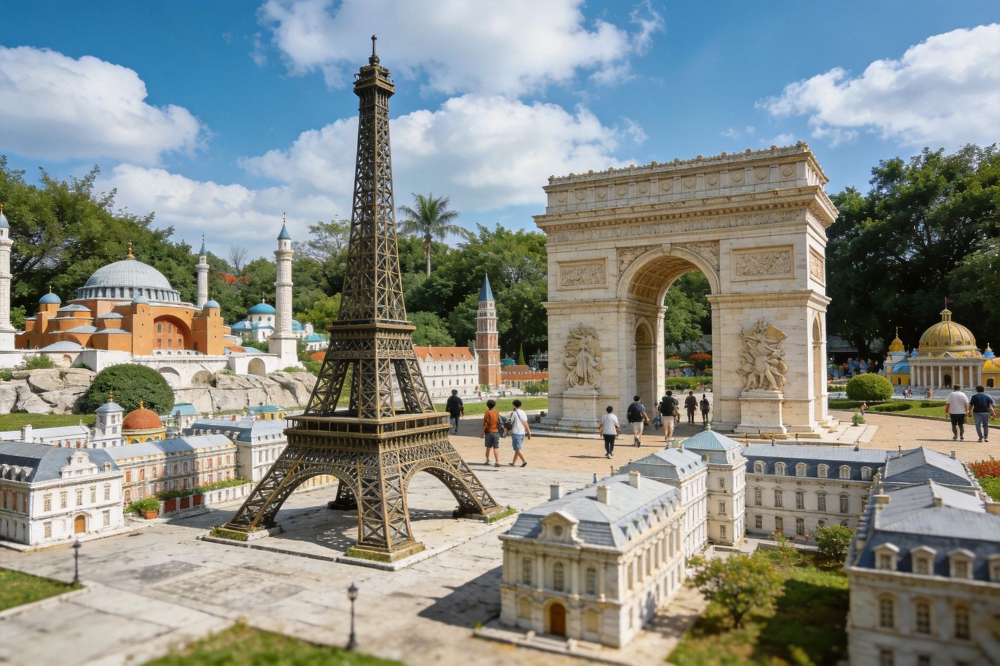
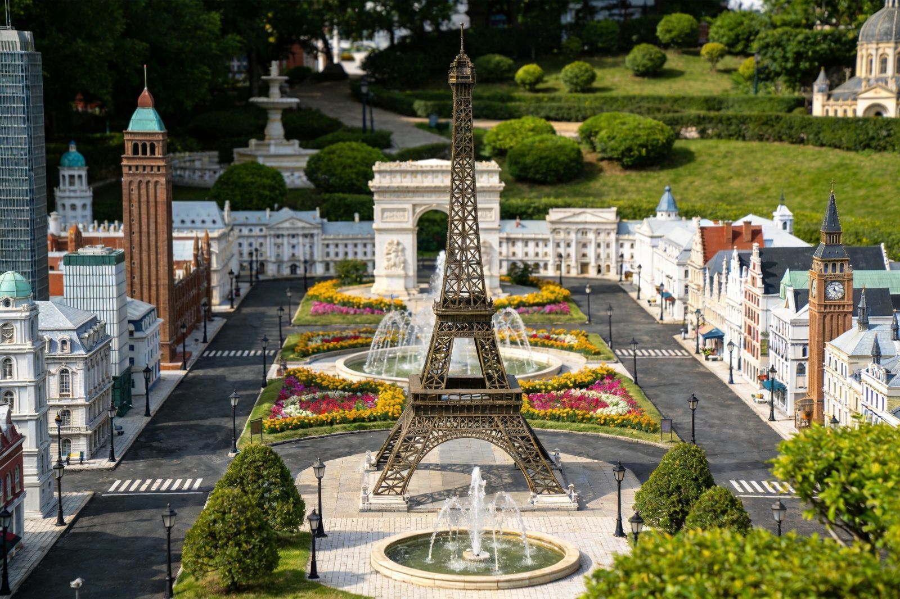
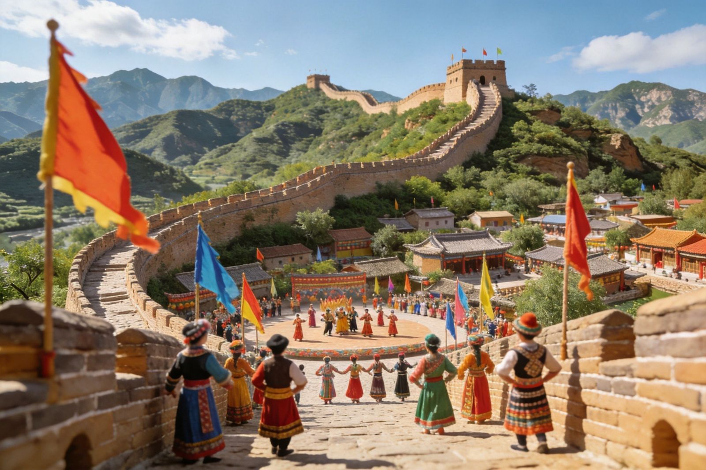

深圳南山深南大道旁的两大「微缩景观」姊妹园，隔着几百米相邻：世界之窗把全球 130 多个文化自然地标按比例微缩进园，锦绣中华民俗村则浓缩中国名胜与 56 个民族村寨。一个「一天看世界」，一个「一天看中国」，是深圳文青出片、亲子科普的经典组合，两园相距近、可买联票联玩。
亚洲区、欧洲区、非洲区、美洲区、大洋洲区等按地理位置分区，埃菲尔铁塔、金字塔、自由女神、泰姬陵等 130+ 世界地标微缩于一园，白天看景观、入夜看灯光秀与焰火晚会。
「锦绣中华」看中国名胜微缩（长城、故宫、兵马俑等），「民俗村」看 56 民族村寨与歌舞，一个园收进大半个中国的地理与人文，亲子科普尤其合适。
时间有限只选一个：想看「环球」选世界之窗；想看「中国」选锦绣中华；时间充足买两园联票，一天内「看世界 + 看中国」双收。
摄影出片、亲子科普、休闲散步爱好者首选；以观光景观为主、机动项目较少，追求刺激者可能觉得偏「静」。

法国埃菲尔铁塔、埃及金字塔、美国自由女神、印度泰姬陵……每一处都按比例还原，形态各异、足不出国一日「游完地球」。

入夜后地标点亮、灯光秀与烟花晚会登场，比白天更震撼梦幻，是深圳经典的「夜游地标」。
配合各地标设置风情歌舞、巡游与演出，边逛边看世界各地的文化表演，氛围拉满。

把中国版图上的名胜古迹按地理分布微缩进园，一日看遍大半个中国的山川名胜与古建筑，是「中国的世界之窗」。
活态呈现多个民族的村落、歌舞、服饰与手工艺，可近距离体验异彩纷呈的民族文化，亲子寓教于乐。
重要节庆常办灯会、民俗灯展与夜游场，传统中国味浓，中秋 / 春节等时段尤其热闹。
| 项目 | 参考 |
|---|---|
| 世界之窗 | 约 180–260 元/人，日场 / 夜场分开售票，夜场更便宜（约 100–130 元） |
| 锦绣中华民俗村 | 约 150–200 元/人，可购联票 |
| 两园联票 | 部分渠道提供世界之窗 + 锦绣中华联票，一天联玩更划算 |
| 交通 | 深圳地铁 1 / 2 号线「世界之窗站」可达世界之窗；「华侨城站」近锦绣中华，两园间步行约 5 分钟 |